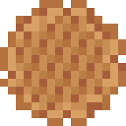
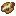
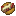
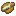
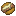

Create: Bitterballen
附属模组
A：荷兰小炸球是一种荷兰料理，由肉类裹上面糊后揉成球状后油炸而成…
这是什么
A：荷兰小炸球是一种荷兰料理，由肉类裹上面糊后揉成球状后油炸而成，有时也会加入一些切碎的蔬菜或香辛料用于调味。
命名空间：
create_bic_bit 1.20.1 版本：本页物品与配方直接取自该版本的 jar。其他35
安山岩篮子create_bic_bit:andesite_basket
碾碎的下界疣create_bic_bit:crushed_nether_wart
凝乳create_bic_bit:curdled_milk
没有工作台/机器配方
末影球create_bic_bit:enderball
番茄酱create_bic_bit:ketchup
没有工作台/机器配方
番茄酱瓶create_bic_bit:ketchup_bottle
蛋黄酱create_bic_bit:mayonnaise
没有工作台/机器配方
蛋黄酱瓶create_bic_bit:mayonnaise_bottle
生荷兰小炸球create_bic_bit:raw_bitterballen
生蛋球create_bic_bit:raw_eggball
烤葵花籽create_bic_bit:roasted_sunflower_seeds
没有工作台/机器配方
荷兰脆饼create_bic_bit:speculaas
没有工作台/机器配方
荷兰华夫饼create_bic_bit:stroopwafel
没有工作台/机器配方
向日葵茎create_bic_bit:sunflowerstem
没有工作台/机器配方
包裹的巧克力施特鲁普华夫create_bic_bit:wrapped_chocolate_glazed_stroopwafel
裹着双重加料的薯条create_bic_bit:wrapped_mayonnaise_ketchup_topped_fries
食物与饮品21
陈年奶酪create_bic_bit:aged_cheese
没有工作台/机器配方
巧克力糖浆华夫饼create_bic_bit:chocolate_glazed_stroopwafel
没有工作台/机器配方
熟鲱鱼create_bic_bit:cooked_herring
没有工作台/机器配方
鲱鱼生成蛋create_bic_bit:herring_spawn_egg
没有工作台/机器配方
生奶酪蛋奶酥create_bic_bit:raw_cheese_souffle
生荷兰炸肉棒create_bic_bit:raw_frikandel
生鲱鱼create_bic_bit:raw_herring
没有工作台/机器配方
生荷兰炸肉卷create_bic_bit:raw_kroket
未成熟的奶酪create_bic_bit:unripe_cheese
打蜡的年轻奶酪create_bic_bit:waxed_young_cheese
年轻的奶酪create_bic_bit:young_cheese
没有工作台/机器配方
建筑与装饰9
脏纸create_bic_bit:dirty_paper
没有工作台/机器配方
顶部加番茄酱的弗里坎德三明治create_bic_bit:ketchup_topped_frikandel_sandwich
顶部加番茄酱的克罗克特三明治create_bic_bit:ketchup_topped_kroket_sandwich

顶部双重加料的弗里坎德三明治create_bic_bit:mayonnaise_ketchup_topped_frikandel_sandwich

顶部双重加料的克罗克特三明治create_bic_bit:mayonnaise_ketchup_topped_kroket_sandwich

顶部加蛋黄酱的弗里坎德三明治create_bic_bit:mayonnaise_topped_frikandel_sandwich

顶部加蛋黄酱的克罗克特三明治create_bic_bit:mayonnaise_topped_kroket_sandwich
荷兰土豆菜create_bic_bit:stamppot
没有工作台/机器配方
荷兰土豆菜碗create_bic_bit:stamppot_bowl
流体与储运8
结晶油create_bic_bit:crystallised_oil
凝乳桶create_bic_bit:curdled_milk_bucket
没有工作台/机器配方
炸油create_bic_bit:frying_oil
没有工作台/机器配方
炸油瓶create_bic_bit:frying_oil_bottle
炸油桶create_bic_bit:frying_oil_bucket
没有工作台/机器配方
一桶鲱鱼create_bic_bit:herring_bucket
没有工作台/机器配方
番茄酱桶create_bic_bit:ketchup_bucket
没有工作台/机器配方
蛋黄酱桶create_bic_bit:mayonnaise_bucket
没有工作台/机器配方